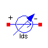
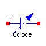
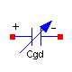
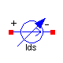
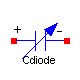
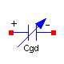

Parameters
| Name | Default | Description |
|---|
| VTO | | Zero-bias threshold voltage [V] |
| GAMMA | | Body-effect parameter [V0.5] |
| PHI | | Surface inversion potencial [V] |
| KP | | Transconductance parameter [A/V2] |
| W | | Gate width [m] |
| L | | Gate length [m] |
| LD | | Lateral diffusion [m] |
| LAMBDA | | Channel-length modulation [V-1] |
Modelica definition
model Ids
extends INTERFACE.OnePort;
extends INIT.Part;
outer SI.Voltage vthDC "Threshold voltage";
outer SI.Voltage vgsDC "Gate to source voltage";
outer SI.Voltage vbsDC "Bulk to source voltage";
outer SI.Voltage vdsDC "Drain to source voltage";
outer SI.Voltage vthTran "Threshold voltage";
outer SI.Voltage vgsTran "Gate to source voltage";
outer SI.Voltage vbsTran "Bulk to source voltage";
outer SI.Voltage vdsTran "Drain to source voltage";
outer SI.Voltage vdsTranSgn "Drain-pin to source-pin voltage";
outer SI.Voltage gate_vAC_Re;
outer SI.Voltage gate_vAC_Im;
outer SI.Voltage bulk_vAC_Re;
outer SI.Voltage bulk_vAC_Im;
parameter SI.Voltage VTO "Zero-bias threshold voltage";
parameter Real GAMMA "Body-effect parameter [V0.5]";
parameter SI.Voltage PHI "Surface inversion potencial";
parameter Real KP "Transconductance parameter [A/V2]";
parameter SI.Length W "Gate width";
parameter SI.Length L "Gate length";
parameter SI.Length LD "Lateral diffusion";
parameter Real LAMBDA "Channel-length modulation [V-1]";
protected
parameter Real beta=KP*W/(L - 2*LD);
Boolean pinNisSourceAC(start=true);
SI.Current idsDC "Drain to source current";
SI.Current idsTran "Drain to source current";
Real ARG(start=0);
SI.Conductance gdsAC "dIds/dVds";
SI.Conductance gmbsAC "dIds/dVbs";
SI.Conductance gmAC "dIds/dVgs";
SI.Voltage vdsAC_Re;
SI.Voltage vdsAC_Im;
SI.Voltage vgsAC_Re;
SI.Voltage vgsAC_Im;
SI.Voltage vbsAC_Re;
SI.Voltage vbsAC_Im;
SI.Current idsAC_Re;
SI.Current idsAC_Im;
equation
// ------------
// Static model
// ------------
iDC = noEvent(if vDC > 0 then idsDC else -idsDC);
idsDC = if vgsDC <= vthDC then 0 else noEvent(if vdsDC < vgsDC - vthDC then
beta*(vgsDC - vthDC - 0.5*vdsDC)*vdsDC*(1 + LAMBDA*vdsDC) else 0.5*beta*(
vgsDC - vthDC)^2*(1 + LAMBDA*vdsDC));
// ------------------
// Large-signal model
// ------------------
iTran = if noEvent(vdsTranSgn >= 0) then idsTran else -idsTran;
idsTran = if vgsTran <= vthTran then 0 else if noEvent(vdsTran < vgsTran -
vthTran) then beta*(vgsTran - vthTran - 0.5*vdsTran)*vdsTran*(1 + LAMBDA*
vdsTran) else 0.5*beta*(vgsTran - vthTran)^2*(1 + LAMBDA*vdsTran);
// ---------------------
// AC small-signal model
// ---------------------
{vdsAC_Re,vdsAC_Im} = if pinNisSourceAC then {vAC_Re,vAC_Im} else -{vAC_Re,
vAC_Im};
{vgsAC_Re,vgsAC_Im} = if pinNisSourceAC then {gate_vAC_Re - n.vAC_Re,
gate_vAC_Im - n.vAC_Im} else {gate_vAC_Re - p.vAC_Re,gate_vAC_Im - p.vAC_Im};
{vbsAC_Re,vbsAC_Im} = if pinNisSourceAC then {bulk_vAC_Re - n.vAC_Re,
bulk_vAC_Im - n.vAC_Im} else {bulk_vAC_Re - p.vAC_Re,bulk_vAC_Im - p.vAC_Im};
{idsAC_Re,idsAC_Im} = gdsAC*{vdsAC_Re,vdsAC_Im} + gmbsAC*{vbsAC_Re,vbsAC_Im}
+ gmAC*{vgsAC_Re,vgsAC_Im};
{iAC_Re,iAC_Im} = if pinNisSourceAC then {idsAC_Re,idsAC_Im} else -{idsAC_Re,
idsAC_Im};
when ctrl_AC then
pinNisSourceAC = (vDC >= 0);
gdsAC = if (vgsDC <= vthDC) then 0 else if (vdsDC < vgsDC - vthDC) then
beta*(vgsDC - vthDC - vdsDC)*(1 + LAMBDA*vdsDC) + beta*(vgsDC - vthDC -
0.5*vdsDC)*LAMBDA*vdsDC else 0.5*beta*(vgsDC - vthDC)^2*LAMBDA;
gmbsAC = gmAC*ARG;
ARG = if vbsDC > 0 then 0.5*GAMMA/(sqrt(PHI) - 0.5*vbsDC/sqrt(PHI)) else
0.5*GAMMA/sqrt(PHI - vbsDC);
gmAC = if (vgsDC <= vthDC) then 0 else if (vdsDC < vgsDC - vthDC) then beta
*vdsDC*(1 + LAMBDA*vdsDC) else beta*(vgsDC - vthDC)*(1 + LAMBDA*vdsDC);
end when;
end Ids;

Parameters
| Name | Default | Description |
|---|
| IS | | Reverse saturation current at 300K [A] |
Modelica definition
model Idiode
extends INTERFACE.OnePort;
extends INIT.Part;
parameter SI.Current IS "Reverse saturation current at 300K";
// Boolean forwardDC "Operation region";
// Boolean forwardTran;
SI.Voltage vDiodeTran "Voltage drop across the diode";
protected
SI.Conductance gAC(start=1) "AC small-signal conductance";
SI.Voltage thermalVolt "Thermal voltage";
equation
// Thermal voltage: kT/q
thermalVolt = temp/11600;
iDC = IS*(exp(vDC/thermalVolt) - 1) + vDC*scaleGMIN*GMIN;
// -------------
// Dynamic model
// -------------
iTran = if noEvent(vDiodeTran > 0) then IS*(exp(vDiodeTran/thermalVolt) - 1)
+ vDiodeTran*GMIN else (IS/thermalVolt + GMIN)*vDiodeTran;
// ------------------
// Small-signal model
// ------------------
when ctrl_AC then
gAC = if (vDC > 0) then IS/thermalVolt*exp(vDC/thermalVolt) + GMIN else IS/
thermalVolt + GMIN;
end when;
{iAC_Re,iAC_Im} = gAC*{vAC_Re,vAC_Im};
end Idiode;

Parameters
| Name | Default | Description |
|---|
| IC | 0 | Initial voltage [V] |
| IC_ENABLED | false | IC enabled |
| CJ | | Capacitance at zero-bias voltage per squere meter of area [F/m2] |
| CJSW | | Capacitance at zero-bias voltage per meter of perimeter [F/m] |
| MJ | | Bulk junction capacitnce grading coefficient |
| MJSW | | Perimeter capacitance grading coefficient |
| FC | | Substrate-junction forward-bias coefficient |
| PB | | Junction potencial [V] |
| P | | Junction perimeter [m] |
| A | | Junction area [m2] |
Modelica definition
model Cdiode
extends BREAKOUT.Capacitor;
parameter Real CJ
"Capacitance at zero-bias voltage per squere meter of area [F/m2]";
parameter Real CJSW
"Capacitance at zero-bias voltage per meter of perimeter [F/m]";
parameter Real MJ "Bulk junction capacitnce grading coefficient";
parameter Real MJSW "Perimeter capacitance grading coefficient";
parameter Real FC "Substrate-junction forward-bias coefficient";
parameter SI.Voltage PB "Junction potencial";
parameter SI.Length P "Junction perimeter";
parameter SI.Area A "Junction area";
protected
parameter Real F2=(1 - FC)^(1 + MJ);
parameter Real F3=1 - FC*(1 + MJ);
parameter Real FCtimesPB=FC*PB;
parameter Real CJtimesA=CJ*A;
parameter Real CJSWtimesP=CJSW*P;
parameter Real coef1=F3*(CJtimesA/F2 + CJSW*P/F2);
parameter Real coef2=(CJtimesA*MJ/F2 + CJSW*P*MJSW/F2)/PB;
parameter Real invPB=1/PB;
equation
// ------------------------
// Large-signal capacitance
// ------------------------
Cvar*der(vTran) = iTran;
Cvar = if noEvent(vTran < FCtimesPB) then CJtimesA/(1 - invPB*vTran)^MJ +
CJSWtimesP/(1 - invPB*vTran)^MJSW else coef1 + coef2*vTran;
// ---------------------------
// AC small-signal capacitance
// ---------------------------
when ctrl_AC then
CvarAC = if (vDC < FCtimesPB) then CJtimesA/(1 - invPB*vDC)^MJ + CJSWtimesP
/(1 - invPB*vDC)^MJSW else coef1 + coef2*vDC;
end when;
end Cdiode;

Parameters
| Name | Default | Description |
|---|
| IC | 0 | Initial voltage [V] |
| IC_ENABLED | false | IC enabled |
| PHI | | Surface inversion potencial [V] |
| LD | | Lateral diffusion [m] |
| W | | Gate width [m] |
| L | | Gate length [m] |
| TOX | | Gate oxide thickness [m] |
| EPSR | | Dielectric constant of the oxide |
| CGDO | | Gate-drain overlap capacitance per meter [F/m] |
| CGSO | | Gate-source overlap capacitance per meter [F/m] |
| gateSourcePinsC | | |
Modelica definition
model Cgd
extends BREAKOUT.Capacitor;
outer SI.Voltage vthDC "Threshold voltage";
outer SI.Voltage vdsDC "Drain to source voltage";
outer SI.Voltage vdsDCSgn "Drain-pin to source-pin voltage";
outer SI.Voltage vgsDC "Gate to source voltage";
outer SI.Voltage vthTran "Threshold voltage";
outer SI.Voltage vdsTran "Drain to source voltage";
outer SI.Voltage vdsTranSgn "Drain-pin to source-pin voltage";
outer SI.Voltage vgsTran "Gate to source voltage";
parameter SI.Voltage PHI "Surface inversion potencial";
parameter SI.Length LD "Lateral diffusion";
parameter SI.Length W "Gate width";
parameter SI.Length L "Gate length";
parameter SI.Length TOX "Gate oxide thickness";
parameter Real EPSR "Dielectric constant of the oxide";
parameter Real CGDO "Gate-drain overlap capacitance per meter [F/m]";
parameter Real CGSO "Gate-source overlap capacitance per meter [F/m]";
parameter Boolean gateSourcePinsC;
protected
parameter SI.Length LEFF=L + 2*LD "Effective length";
parameter SI.Capacitance COX=EPS0*EPSR*W*LEFF/TOX "Gate oxide capacitance";
constant Real EPS0=8.85e-12 "Permittivity of free space [F/m]";
parameter Real CGSOtimesW=CGSO*W;
parameter Real CGDOtimesW=CGDO*W;
parameter Real twoThirdsCOX=2/3*COX;
parameter Real threeFourthsCOX=3*COX/4;
parameter Real halfCOX=0.5*COX;
parameter SI.Voltage vdsTranEPS=1e-4;
parameter SI.Voltage vdsDCEPS=1e-4;
Real Cgs;
Real Cgd;
Real CgsAC;
Real CgdAC;
Real CpinsGS;
Real CpinsGD;
Real CpinsGSAC;
Real CpinsGDAC;
equation
// ------------------------
// Large-signal capacitance
// ------------------------
Cvar*der(vTran) = iTran;
Cvar = if gateSourcePinsC then CpinsGS else CpinsGD;
//Gate-pin to Source-pin capacity
CpinsGS = if noEvent(vdsTranSgn < -vdsTranEPS) then Cgd else if noEvent(
vdsTranSgn < vdsTranEPS) then 0.5*(Cgs - Cgd)*vdsTranSgn/vdsTranEPS + 0.5*(
Cgs + Cgd) else Cgs;
// Gate-pin to Drain-pin capacity
CpinsGD = if noEvent(vdsTranSgn < -vdsTranEPS) then Cgs else if noEvent(
vdsTranSgn < vdsTranEPS) then 0.5*(Cgd - Cgs)*vdsTranSgn/vdsTranEPS + 0.5*(
Cgs + Cgd) else Cgd;
Cgs - CGSOtimesW = if noEvent(vgsTran <= vthTran - PHI) then 0 else if
noEvent(vgsTran <= vthTran) then twoThirdsCOX*((-vthTran + vgsTran)/PHI + 1)
else if noEvent(vgsTran <= vthTran + vdsTran) then twoThirdsCOX else if
noEvent(vdsTran <= 2*vdsTranEPS) then halfCOX else twoThirdsCOX*(1 - ((
vgsTran - vdsTran - vthTran)/(2*(vgsTran - vthTran) - vdsTran))^2);
Cgd - CGDOtimesW = if noEvent(vgsTran <= vthTran + vdsTran) then 0 else if
noEvent(vdsTran <= 2*vdsTranEPS) then threeFourthsCOX else COX*(1 - ((
vgsTran - vthTran)/(2*(vgsTran - vthTran) - vdsTran))^2);
// ------------------------------------------------
// AC small-signal capacitance and operation region
// ------------------------------------------------
when ctrl_AC then
CvarAC = if gateSourcePinsC then CpinsGSAC else CpinsGDAC;
// Gate-pin to Source-pin capacity
CpinsGSAC = if noEvent(vdsDCSgn < -vdsDCEPS) then CgdAC else if noEvent(
vdsDCSgn < vdsDCEPS) then 0.5*(CgsAC - CgdAC)*vdsDCSgn/vdsDCEPS + 0.5*(
CgsAC + CgdAC) else CgsAC;
// Gate-pin to Drain-pin capacity
CpinsGDAC = if noEvent(vdsDCSgn < -vdsDCEPS) then CgsAC else if noEvent(
vdsDCSgn < vdsDCEPS) then 0.5*(CgdAC - CgsAC)*vdsDCSgn/vdsDCEPS + 0.5*(
CgsAC + CgdAC) else CgdAC;
// ********
CgsAC = if (vgsDC <= vthDC - PHI) then CGSOtimesW else if (vgsDC <= vthDC)
then twoThirdsCOX*((-vthDC + vgsDC)/PHI + 1) + CGSOtimesW else if (vgsDC
<= vthDC + vdsDC) then twoThirdsCOX + CGSOtimesW else if (vdsDC <= 2*
vdsDCEPS) then halfCOX + CGSOtimesW else twoThirdsCOX*(1 - ((vgsDC -
vdsDC - vthDC)/(2*(vgsDC - vthDC) - vdsDC))^2) + CGSOtimesW;
CgdAC = if (vgsDC <= vthDC + vdsDC) then CGDOtimesW else if (vdsDC <= 2*
vdsDCEPS) then threeFourthsCOX + CGDOtimesW else COX*(1 - ((vgsDC - vthDC)
/(2*(vgsDC - vthDC) - vdsDC))^2) + CGDOtimesW;
end when;
end Cgd;

Parameters
| Name | Default | Description |
|---|
| IC | 0 | Initial voltage [V] |
| IC_ENABLED | false | IC enabled |
| PHI | | Surface inversion potencial [V] |
| LD | | Lateral diffusion [m] |
| W | | Gate width [m] |
| L | | Gate length [m] |
| TOX | | Gate oxide thickness [m] |
| EPSR | | Dielectric constant of the oxide |
| CGBO | | Gate-bulk overlap capacitance per meter [F/m] |
Modelica definition
model Cgb
extends BREAKOUT.Capacitor;
outer SI.Voltage vthDC "Threshold voltage";
outer SI.Voltage vdsDC "Drain to source voltage";
outer SI.Voltage vgsDC "Gate to source voltage";
outer SI.Voltage vthTran "Threshold voltage";
outer SI.Voltage vdsTran "Drain to source voltage";
outer SI.Voltage vgsTran "Gate to source voltage";
parameter SI.Voltage PHI "Surface inversion potencial";
parameter SI.Length LD "Lateral diffusion";
parameter SI.Length W "Gate width";
parameter SI.Length L "Gate length";
parameter SI.Length TOX "Gate oxide thickness";
parameter Real EPSR "Dielectric constant of the oxide";
parameter Real CGBO "Gate-bulk overlap capacitance per meter [F/m]";
protected
parameter SI.Length LEFF=L + 2*LD "Effective length";
parameter SI.Capacitance COX=EPS0*EPSR*W*LEFF/TOX "Gate oxide capacitance";
parameter Real CGBOtimesLEFF=CGBO*LEFF;
parameter Real COXtimesinvPHI=COX/PHI;
constant Real EPS0=8.85e-12 "Permittivity of free space [F/m]";
equation
// ------------------------
// Large-signal capacitance
// ------------------------
Cvar*der(vTran) = iTran;
Cvar - CGBOtimesLEFF = if noEvent(vgsTran < vthTran - PHI) then COX else if
noEvent(vgsTran < vthTran) then COXtimesinvPHI*(vthTran - vgsTran) else 0;
// ------------------------------------------------
// AC small-signal capacitance and operation region
// ------------------------------------------------
when ctrl_AC then
CvarAC = if (vgsDC < vthDC - PHI) then COX + CGBOtimesLEFF else if (vgsDC
< vthDC) then COXtimesinvPHI*(vthDC - vgsDC) + CGBOtimesLEFF else
CGBOtimesLEFF;
end when;
end Cgb;
HTML-documentation generated by Dymola Tue Oct 14 18:26:45 2003
.